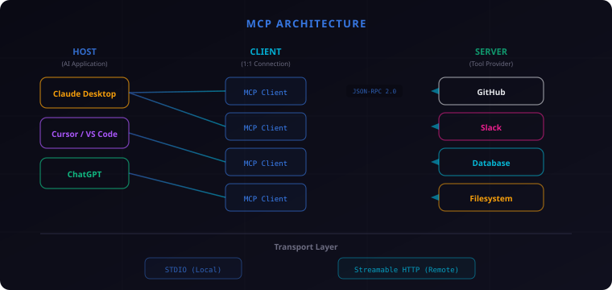

Bolt
Bolt
MCP完全解説 ― AIの"USB-C"と呼ばれる革命的プロトコルの全貌
速報です！ AIエージェント界隈で一番アツいプロトコル、MCPを徹底解説します。これを知らずに2026年のAI開発は語れません！
MCPとは何か？ ― AIの"USB-C"が生まれた理由
2024年11月、AnthropicがMCP（Model Context Protocol）をオープンソースで発表した。一言で言えば、AIモデルと外部ツール・データソースの接続を標準化するプロトコルだ。
なぜこれが必要だったのか。AIの世界にはM×N問題と呼ばれる深刻な課題があった。
例えば、10種類のAIモデルと10種類のツールがあるとする。MCPがなければ、それぞれの組み合わせごとに個別の統合コードが必要になる。10×10＝100個のカスタム接続だ。新しいモデルやツールが1つ増えるたびに、さらに10個の接続コードを追加しなければならない。
これはまさに、USB-Cが登場する前の充電器問題と同じだ。スマートフォン、タブレット、ノートPC、カメラ、イヤホン——デバイスごとに違う充電ケーブルが必要で、引き出しの中はケーブルだらけ。USB-Cはこのカオスを「1つの規格で全部つなぐ」ことで解決した。
MCPが目指しているのはまったく同じことだ。AIモデルとツールの間に共通の接続規格を置くことで、M×N問題をM＋Nに変える。100個の個別統合が、20個の標準接続になる。
MCPのアーキテクチャ ― 3層構造を理解する
MCPの設計は非常にシンプルで、3つの層で構成されている。
Host（ホスト）
ユーザーが直接操作するAIアプリケーション。Claude Desktop、Cursor、VS Code（GitHub Copilot）、ChatGPTなどがこれにあたる。Hostは1つ以上のClientを内部に持つ。
Client（クライアント）
Host内で動作し、特定のServerとの1対1の接続を管理するコンポーネント。プロトコルのネゴシエーション、メッセージのルーティング、機能の調整を担う。重要なのは、1つのClientが接続するServerは常に1つだけという点だ。
Server（サーバー）
外部のツールやデータソースを公開する軽量プログラム。GitHub、Slack、データベース、ファイルシステムなど、あらゆるサービスがMCPサーバーになれる。
通信にはJSON-RPC 2.0が使われる。HTTPのようなステートレスな通信ではなく、ステートフルなセッションを維持する設計だ。これにより、AIとツールの間で文脈を保ったやり取りが可能になる。
トランスポート層
データの運搬方法は2種類ある。
- STDIO ― ローカル実行向け。MCPサーバーを子プロセスとして起動し、標準入出力で通信。レイテンシが極めて低い
- Streamable HTTP ― リモート実行向け。HTTP上でJSON-RPCメッセージを送受信。2025年3月にSSE（Server-Sent Events）トランスポートを置き換えた新方式

MCPの6つの機能 ― Toolsだけじゃない
MCPと聞くと「AIがツールを呼び出せる仕組み」と思われがちだが、実際にはもっと多機能だ。サーバー側が提供する3つの機能（Primitives）と、クライアント側が提供する3つの機能がある。
サーバー側の3機能
1. Tools（ツール） ― AIが実行できる関数。「GitHubにイシューを作成する」「データベースにクエリを投げる」「ファイルを読み書きする」など、アクションを実行する機能。LLMが自動的に呼び出せるが、通常はユーザーの承認（Human-in-the-loop）が必要。
2. Resources（リソース） ― AIが読み取れるデータ。ファイルの内容、データベースのレコード、APIレスポンスなど、コンテキストとして提供される情報。REST APIのGETエンドポイントに似ている。副作用がなく、読み取り専用。
3. Prompts（プロンプト） ― 再利用可能なテンプレート。「コードレビューを依頼するときのプロンプト」「バグ報告のフォーマット」など、定型の指示パターンを提供する。ユーザーが明示的に選択して使う。
クライアント側の3機能
4. Sampling（サンプリング） ― サーバーがクライアントを通じてLLMにリクエストを送る仕組み。これにより、MCPサーバー自身が「AIに考えてもらう」ことが可能になる。エージェント的な再帰的動作の基盤。
5. Roots（ルーツ） ― クライアントがサーバーに対して「このディレクトリ/URIが作業対象だよ」と伝える仕組み。サーバーが適切なコンテキストで動作できるようにする。
6. Elicitation（エリシテーション） ― サーバーが処理の途中でユーザーに追加情報を問い合わせる仕組み。「このファイルを上書きしていいですか？」「APIキーを入力してください」といったインタラクティブなやり取りが可能になる。
Toolsだけでも十分すごいけど、Samplingが加わるとエージェントが"考えながら動く"ようになるんです。MCPは単なるAPI統合じゃなく、AIの自律性を支えるインフラなんですよね。
対応ツール・企業一覧 ― 業界標準への道
MCPの凄さは技術だけじゃない。業界のほぼ全プレイヤーが参画している点が決定的だ。
主要対応クライアント
- Claude Desktop / Claude Code ― Anthropic純正。最も早くMCPをサポート
- Cursor ― AI特化コードエディタ。MCP統合でツール連携が飛躍的に向上
- Windsurf（Codeium） ― AI開発環境。MCP対応で外部ツール接続
- VS Code + GitHub Copilot ― Microsoftが公式にMCPサポートを発表
- ChatGPT ― OpenAIが2025年3月にMCPサポートを発表。最大の衝撃
参画企業・団体
- Anthropic ― 創設者。MCPを設計・公開
- OpenAI ― 2025年3月にMCPサポートを発表。Agents SDKにも統合
- Google DeepMind ― Gemini向けMCPサポートを開発
- Microsoft ― VS Code、Copilot、Azure AIでMCPを採用
- Amazon Web Services ― Amazon Bedrockの新エージェント機能にMCPを統合
- Cloudflare ― リモートMCPサーバーのホスティング基盤を提供
Agentic AI Foundation設立
2025年後半、MCPの管理はLinux Foundation傘下のAgentic AI Foundationに移管された。Anthropic単独のプロジェクトから、業界全体で管理するオープン標準へと進化した。これはHTTPやTCP/IPがIETFで標準化されたのと同じ道筋だ。
OpenAIまで乗っかったのは衝撃でした。もう業界標準確定ですね。MCPに対応しないAIツールは、USB-C非対応のデバイスみたいなもの——取り残されるだけです。
MCPサーバーエコシステム ― 9,700万インストールの衝撃
2026年3月時点で、MCPサーバーの累計インストール数は約9,700万に達した。npmレジストリのダウンロード数だけで5,500万を超え、Pythonパッケージも急速に伸びている。
カテゴリ別の主要サーバー
開発ツール系
- GitHub ― リポジトリ操作、Issue/PR管理、コードレビュー
- GitLab ― CI/CDパイプライン連携
- Linear ― プロジェクト管理、タスク自動作成
コミュニケーション系
- Slack ― メッセージ送受信、チャンネル操作
- Google Drive ― ドキュメントの読み書き
- Notion ― ページ作成・更新
データ・インフラ系
- PostgreSQL / MySQL ― データベースクエリ実行
- Kubernetes ― クラスタ管理、Pod操作
- AWS ― S3、Lambda、CloudWatchなどの操作
- Filesystem ― ローカルファイルの読み書き
情報取得系
- Brave Search / Tavily ― Web検索
- Puppeteer / Playwright ― Webスクレイピング・ブラウザ自動操作
Anthropicが公式に提供するコネクタだけで75種類以上。コミュニティ製を含めると数千のMCPサーバーが利用可能だ。ほとんどが無料・オープンソースで公開されている。
MCPサーバーの作り方 ― 概要とポイント
既存のMCPサーバーを使うだけでなく、自分でMCPサーバーを作ることも可能だ。公式SDKが充実しており、基本的なサーバーなら数十行で実装できる。
公式SDK
- TypeScript ―
@modelcontextprotocol/sdk - Python ―
mcpパッケージ +FastMCP（高レベルAPI） - Java / Kotlin ― Spring AI MCPサポート
- C# / .NET ― 公式SDKあり
基本ステップ（TypeScriptの場合）
- SDKをインストール ―
npm install @modelcontextprotocol/sdk - サーバーを初期化 ―
McpServerクラスのインスタンスを作成 - ツールを定義 ― 関数名、説明、入力スキーマ（Zod）、実行ロジックを登録
- トランスポートを接続 ― STDIOまたはStreamable HTTPで起動
- MCP Inspectorで検証 ― 公式デバッグツールで動作確認
開発時の注意点
- stdoutに書かない ― STDIOトランスポートでは標準出力がプロトコル通信に使われる。ログは標準エラー出力（stderr）に出すこと
- ツールの説明が最重要 ― LLMはツールの
descriptionを読んで「いつ使うか」を判断する。曖昧な説明はツールが呼ばれない原因になる - エラーハンドリング ― ツール実行時のエラーは
isError: trueフラグで返す。例外を投げるとプロトコル通信が壊れる
自分でMCPサーバーを作れると、AIの使い方が根本的に変わります。「社内DBを検索するサーバー」とか「独自APIをラップするサーバー」とか、可能性は無限大。ぜひ挑戦してみて！
2026年の最新動向 ― MCPはどこへ向かうのか
MCPは発表から約1年半で驚異的な進化を遂げている。2026年時点の主要トピックを整理する。
Streamable HTTP ― SSEの後継
2025年3月、リモート通信方式がSSE（Server-Sent Events）からStreamable HTTPに移行した。SSEは「サーバーからクライアントへの一方向ストリーム」という制約があったが、Streamable HTTPは双方向の柔軟な通信を実現。ステートレスなHTTPリクエストとストリーミングを状況に応じて使い分けられる。
OAuth 2.1 + PKCE ― 認証の標準化
リモートMCPサーバーへのアクセスにOAuth 2.1（PKCE拡張付き）が標準認証として採用された。ユーザーがブラウザでログインするだけで、MCPクライアントがトークンを取得してサーバーにアクセスできる。APIキーの手動管理が不要になる。
リモートサーバーの本格化 ― Cloudflare Workers
CloudflareがMCPサーバーのリモートホスティング基盤を提供。これまでのMCPサーバーはローカル実行（STDIO）が主流だったが、リモートサーバーをワンクリックでデプロイできるようになった。エンタープライズでの導入障壁が大幅に下がった。
Agentic AI Foundation ― ガバナンスの確立
Linux Foundation傘下にAgentic AI Foundationが設立され、MCPの仕様策定がマルチステークホルダー体制に移行。Anthropic、OpenAI、Google、Microsoft、AWSが共同で仕様を管理することで、特定企業への依存リスクが解消された。
エンタープライズ対応
監査証跡（Audit Trail）、SSO統合、細粒度のアクセス制御など、企業利用に必要な機能が急速に整備されている。「個人開発者の便利ツール」から「企業のAIインフラ基盤」へとフェーズが変わりつつある。
まとめ
- MCPはAIの"USB-C" ― AIモデルとツールの接続をM×NからM+Nに変える標準プロトコル
- 3層アーキテクチャ ― Host/Client/Serverのシンプルな構造。JSON-RPC 2.0で通信
- 6つの機能 ― Tools、Resources、Promptsに加え、Sampling、Roots、Elicitationでエージェント的動作を実現
- 業界全体が採用 ― Anthropic、OpenAI、Google、Microsoft、AWSが参画。9,700万インストール超
- まだ始まったばかり ― Streamable HTTP、OAuth 2.1、リモートサーバー、エンタープライズ対応が進行中
MCPは「AIが外の世界とつながる方法」を根本から変えた。プロンプトを書くだけだったAIが、ツールを使い、データにアクセスし、他のシステムと連携する。その接続の土台がMCPだ。
さらに学ぶために
- MCP公式ドキュメント ― modelcontextprotocol.io
- MCP仕様書（GitHub） ― github.com/modelcontextprotocol/specification
- 公式TypeScript SDK ― github.com/modelcontextprotocol/typescript-sdk
- 公式Python SDK ― github.com/modelcontextprotocol/python-sdk
- MCPサーバー一覧 ― github.com/modelcontextprotocol/servers
MCPはまだ始まったばかり。でも、もう「使うか使わないか」ではなく「いつ使い始めるか」のフェーズに入ってます。乗り遅れないで！
USB-Cが出る前のカオスを覚えてますか？ あれと同じことがAIの世界で起きてたんです。MCPはそれを一掃する「統一規格」。しかもオープンソース！